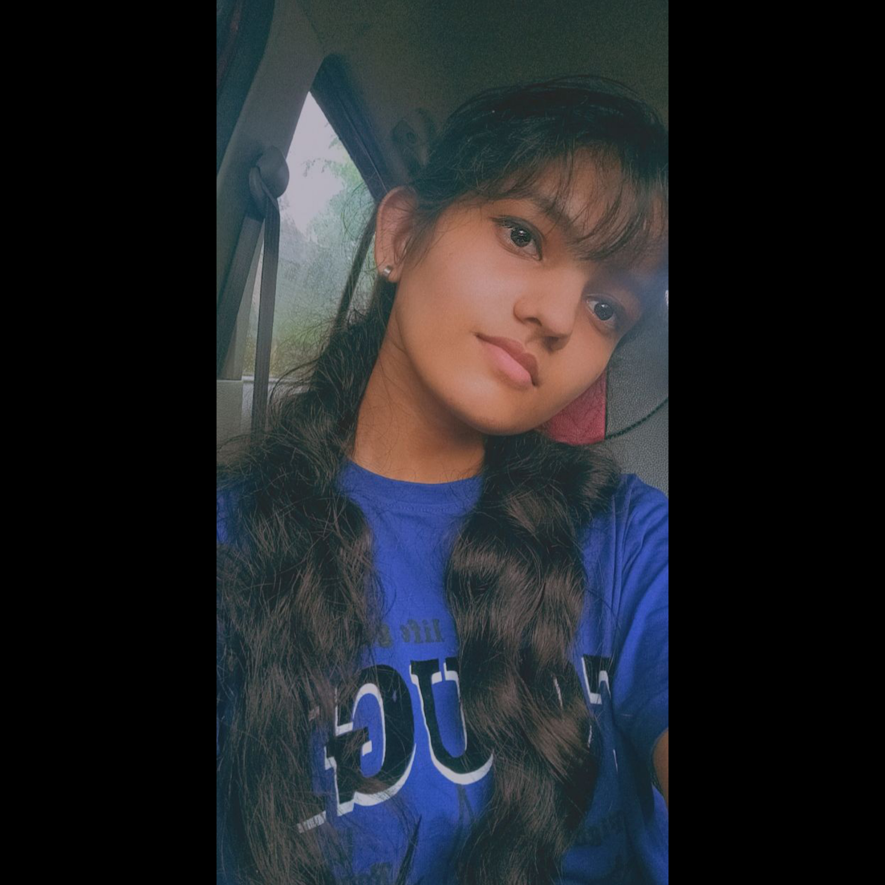

Sandra Keloth

Summary
I am a very passionate hardworking individual who loves to take challenges and learn new things.
Education
-
Computer Science Engineering - College of Engineering, Thalassery
-
UX Design - Coursera
Technical Proficiency
Projects
- Gesture Flow- The project aims at eliminating the need for physical contact and using hand gestures to control media,pdf,volume and brightness.
Others
Hobbies
Contact me